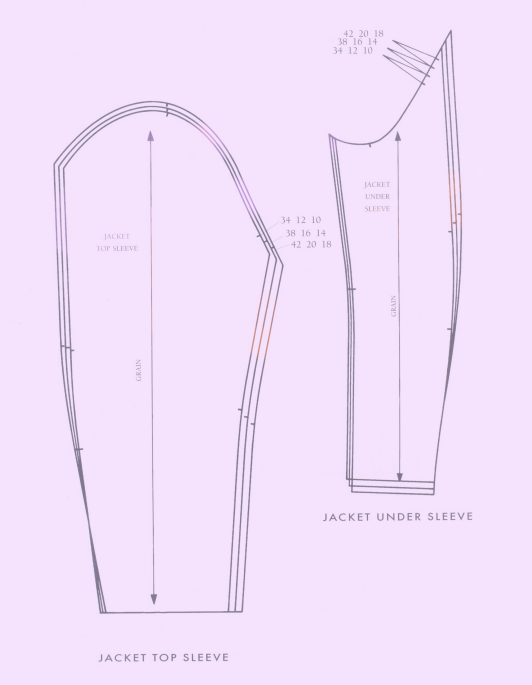

Acrylic vs natural fibers: the never ending
debate. Looking for a breakdown of the specific
pros and cons of each? Then look no further.
Below is a comprehensive review of all...
Click to read more
Best stitches for a visually interesting project.
Below
is a collection of my personal favorite
stitches suited
for intermediate or advanced
projects...
Click to read more
Introduction to pattern drafting. It's not as
difficult
as you may think! Learn to make
projects that not only
look good but also fit well.
Design modern garments...
Click to read more

